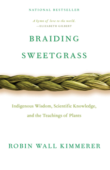
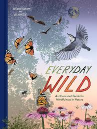
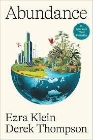

Reccomended Books
As a botanist and professor of plant ecology, Robin Wall Kimmerer has spent a career learning how to ask questions of nature using the tools of science. As a Potawatomi woman, she learned from elders, family, and history that the Potawatomi, as well as a majority of other cultures indigenous to this land, consider plants and animals to be our oldest teachers. In Braiding Sweetgrass, Kimmerer brings these two lenses of knowing together to reveal what it means to see humans as "the younger brothers of creation". As she explores these themes, she circles toward a central argument: The awakening of a wider ecological consciousness requires the acknowledgement and celebration of our reciprocal relationship with the world. Once we begin to listen for the languages of other beings, we can begin to understand the innumerable life-giving gifts the world provides us and learn to offer our thanks, our care, and our own gifts in return.
Everyday Wild is an illustrated celebration of the vast natural diversity of the world, one that you can find by simply stepping outside. This guide to backyard (or front stoop!) ecology encourages you to notice every sight, sound, and smell—the rustle of falling leaves, the chirping of crickets, the scent of spring rain, and the radiance of the stars above—as a way of understanding the wonders of our complex, beautiful planet.
Embrace a plastic-free lifestyle with more than 100 simple, stylish swaps for everything from pens and toothbrushes to disposable bottles and the 5 trillion plastic bags we use—and throw out—every year. Organized into five sections—At Home, Food & Drink, Health & Beauty, On the Go, and Special Occasions—Living Without Plastic is a cover-to-cover collection of doable, differencemaking solutions, including a 30-Day Plastic Detox Program.
To trace the history of the twenty-first century so far is to trace a history of unaffordability and shortage. After years of refusing to build sufficient housing, America has a national housing crisis. After years of limiting immigration, we don’t have enough workers. Despite decades of being warned about the consequences of climate change, we haven’t built anything close to the clean-energy infrastructure we need. Ambitious public projects are finished late and over budget—if they are ever finished at all. The crisis that’s clicking into focus now has been building for decades—because we haven’t been building enough.

.jpg)